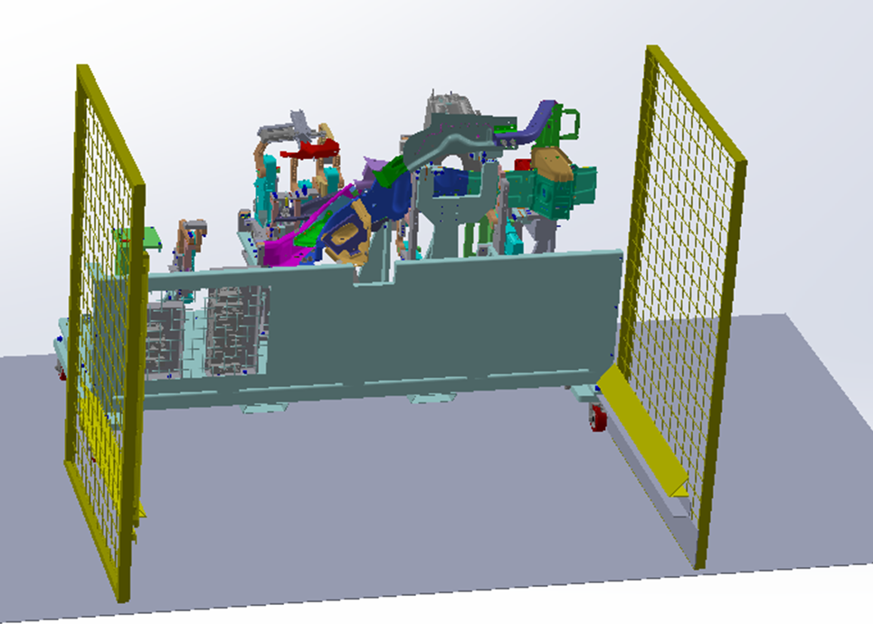
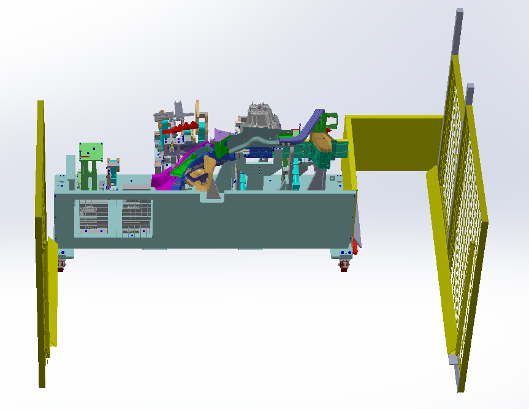

Martinrea International
Station Redesign
Reducing operator movement and cycle time through manufacturing-cell redesign.
Role
Manufacturing Engineering Intern
Focus
Station Design · Operator Flow · Process Optimization
Tools
SOLIDWORKS · Robot Simulation · Guarding · Light Curtains
01 Operator Flow Redesign
Reducing two cell entries to one by reorganizing the operator workflow.
The existing process required the operator to enter the cell to bolt the rail, exit, and then re-enter to place the part for welding. I redesigned the station so both tasks could be completed during a single cell entry, eliminating unnecessary operator movement and reducing cycle time.
Before
- Enter
- Bolt Rail
- Exit
- Re-enter
- Place Part
- Exit
Redesigned
- Enter
- Bolt Rail + Place Part
- Exit

02 Cell Layout Redesign
Opening the cell created a pathway that supported a single-entry workflow.
The existing cell layout restricted the operator pathway and required the double-entry workflow.
The redesign opened the cell to create a new pathway that allowed the operator to perform both required operations during the same entry.
03 Safety & Robot Clearance
Integrating safe operator access without interfering with automated equipment.
Opening the cell created a new operator access point adjacent to automated equipment. I redesigned the physical guarding and incorporated light-curtain coverage around the expanded access area to maintain safe separation between the operator and automated equipment.
Because the modified cell geometry also changed the space surrounding the existing weld robot, I used robot simulation to validate the redesigned layout and confirm that the new guarding and operator pathway would remain clear of the robot throughout its required motions.
04 Final Operator Movement
The final layout created a more direct operator path through a single cell entry.

05 Results
40%
JPH Increase
17.1 s
Cycle Time Reduction
Simplified
Operator Flow
06 Engineering Takeaways
Design Around the Operator
Manufacturing equipment should support efficient operator movement rather than forcing unnecessary motion into every production cycle.
Layout Changes Have Safety Implications
Changing operator access also changes the safety boundaries of a cell. Guarding, light curtains, and robot clearance need to be considered as part of the layout itself.
Eliminate Motion at the Source
Rather than optimizing an inefficient sequence, redesigning the cell removed an unnecessary entry from every production cycle.
Engineering Methods
SOLIDWORKS · Station Design · Operator Flow · Robot Simulation · Guarding · Light Curtains · Process Optimization · Cycle Time Analysis